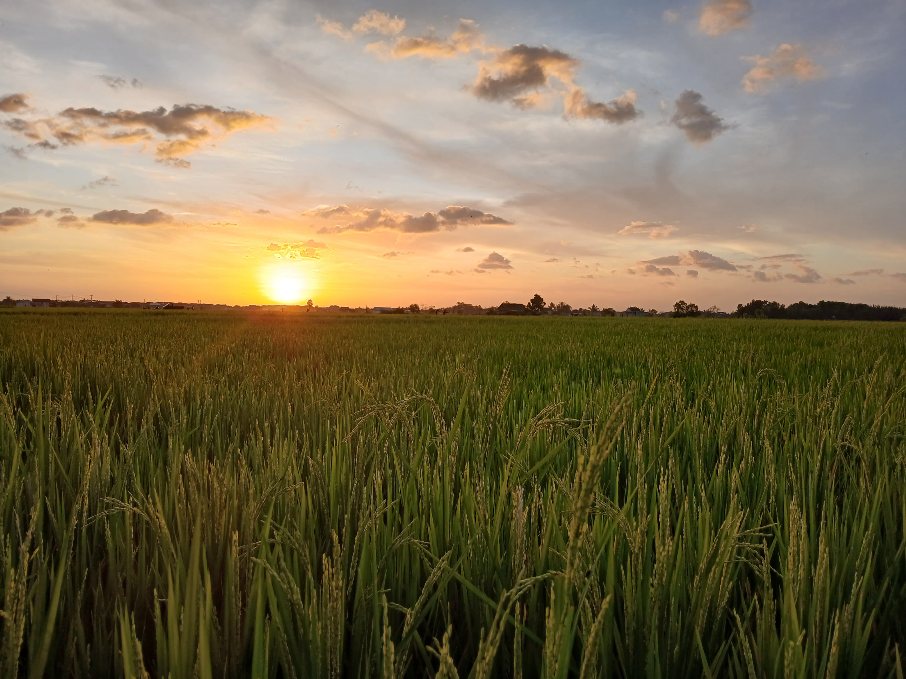

Selamat Datang di Website Desa Minasa Upa
Jelajahi berbagai informasi menarik tentang desa Minasa Upa.

Struktur Organisasi dan Tata Kelola
Aparat Pemerintah Desa
Kepala Desa Minasa Upa
Sekretaris Desa Minasa Upa
Kasi Pemerintahan
Kasi Pelayanan & Kesejahteraan
Kaur Keuangan
Kaur Umum & Perencanaan
Staf
Kepala Dusun Bua'mata
Kepala Dusun Sikapaya
Kepala Dusun Cambaya
Kepala Dusun Pappaka

Kepala Dusun Kalupenrang
Informasi Umum
Minasa Upa (Lontara Makassar: ᨆᨗᨊᨔ ᨕᨘᨄ , transliterasi: Minasa Upa) adalah nama sebuah desa yang berada di wilayah Kecamatan Bontoa, Kabupaten Maros, Provinsi Sulawesi Selatan, Indonesia. Desa Minasa Upa Terdiri dari 5 Dusun yaitu dusun Bua'mata, sikapaya, kalupenrang, cambaya dan pappaka.
Sejarah
1960
Awal pembentukan
H. Siara sebagai pemimpinan awal dari Desa Tupabiring.
Berdirinya desa Minasa Upa
Desa Minasa Upa (sebelumnya adalah desa perisapan) berdiri sebagai dari pemekaran Desa Tupabiring. Pengangkatan pejabat Kepala Desa Minasa Upa, yaitu H. Bahasang Dg. Ngola dan pejabat Sekretaris Desa, yaitu Muh. Siden.
Awal pesta demokrasi
Awal dilaksanakannya pesta demokrasi di desa Minasa Upa, dimana terjadinya pemilihan Kepala Desa yang dimenangkan oleh H. Bahasang Dg. Ngola. Pada tahun ini juga dilakukan pembangunan Kantor Sekretariat Desa Minasa Upa.
Pemilihan Kepala Desa kedua
Pemilihan Kepala Desa Minasa Upa yang dimenangkan oleh H. Bahasang Dg. Ngola.
Pemilihan Kepala Desa ketiga
Pemilihan Kepala Desa Minasa Upa yang dimenangkan oleh H. Muh Amir Arsyad.
Pengangkatan Sekretaris Desa
Pengangkatan pejabat Sekretaris Desa Minasa Upa, yaitu Syarifuddin.
Pemilihan Kepala Desa ketiga
Pemilihan Kepala Desa Minasa Upa yang dimenangkan oleh H. Abdul Wafir.
Pembangunan Kantor Desa
Pembangunan Kantor Desa Minasa Upa.
Pemilihan Kepala Desa keempat
Pemilihan Kepala Desa Minasa Upa yang dimenangkan oleh H. Abdul Wafir.
Pengangkatan Pj Kepala Desa
Pengangkatan Pj Kepala Desa Minasa Upa, yaitu Syarifuddin S.Sos dan pengangkatan Plt Sekretaris Desa Minasa Upa, yaitu Satriati.
Pemilihan Kepala Desa kelima
Pemilihan Kepala Desa Minasa Upa dan dimengangkan oleh Rusman, S.Sos yang menjabat hingga sekarang.
Pengangkatan Sekretaris Desa
Pengangkatan Sekretaris Desa Minasa Upa, yaitu Mardia yang menjabat hingga sekarang.
Visi Misi
Dalam meraih visi Desa Minasa Upa di atas dengan mempertimbangkan potensi dan hambatan baik internal maupun eksternal, maka disusunlah Misi Desa Minasa Upa diantaranya:
Peta Lokasi
Desa Minasa Upa
Batas Desa
Sebelah Utara: Kabupaten Pangkep
Sebelah Selatan: Desa Tunikamaseang
Sebelah Barat: Desa Topabiring dan Ampekale
Sebelah Timur: Desa Salenrang dan Boto Lempangan
Luas Desa
811,86 Ha
Jumlah Penduduk
3.118 Jiwa
Data Penduduk Berdasarkan Umur dan Jenis Kelamin
Total: 9
Produk Desa
Objek Wisata
Pada tangggal 17 Juli 2024 Kepala Desa Minasa Upa Rusman, S.Sos menghadiri seminar program kerja kkn unhas gel 112 di kantor kecamatan Bontoa. Seminar tersebut diadakan untuk memaparkan program kerja yang akan di lakukan selama 45 hari ber-kkn di desa Minasa Upa. Dalam kesempatan tersebut kepala desa Minasa Upa berkesempatan memberikan sambutan. Beliau menyampaikan bahwa jika ada seminar seperti ini seharusnya dilaksanakan tingkat desa agar masyarakat desa setempat juga mengetahui program-program kerja yang dipaparkan.
18 Juli 2024